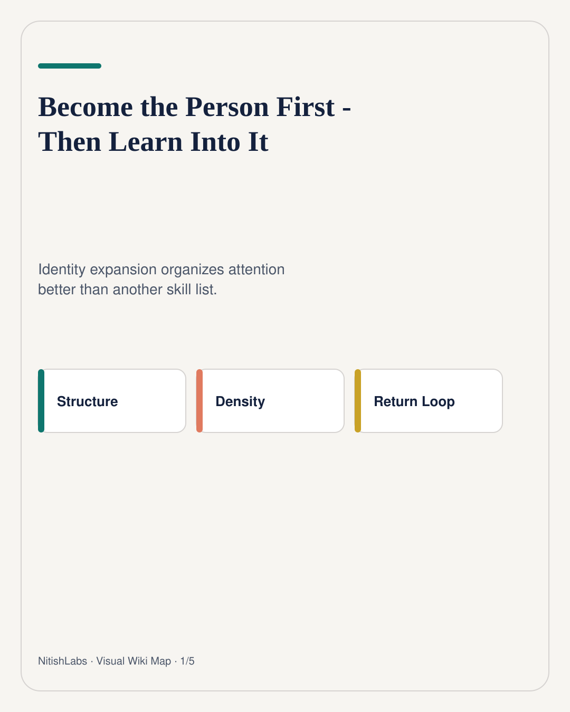
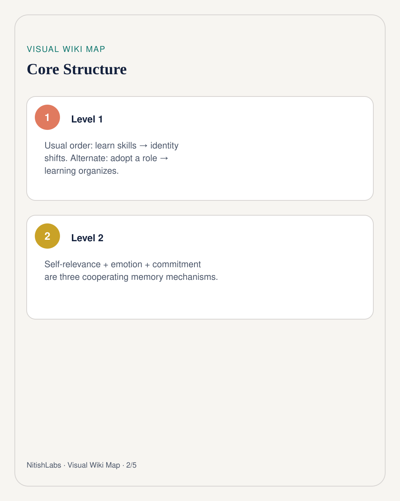
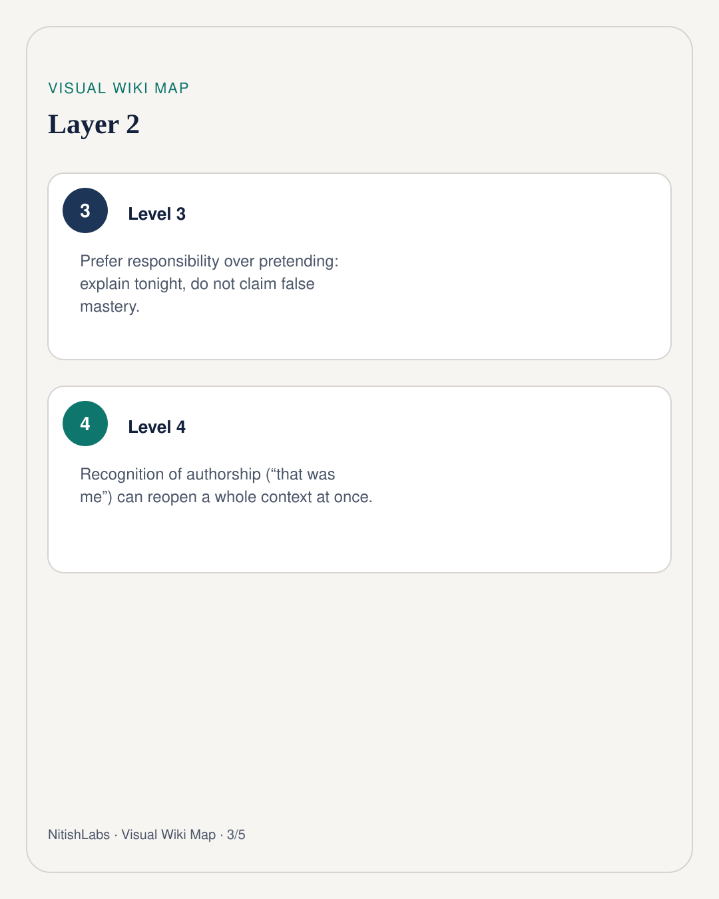
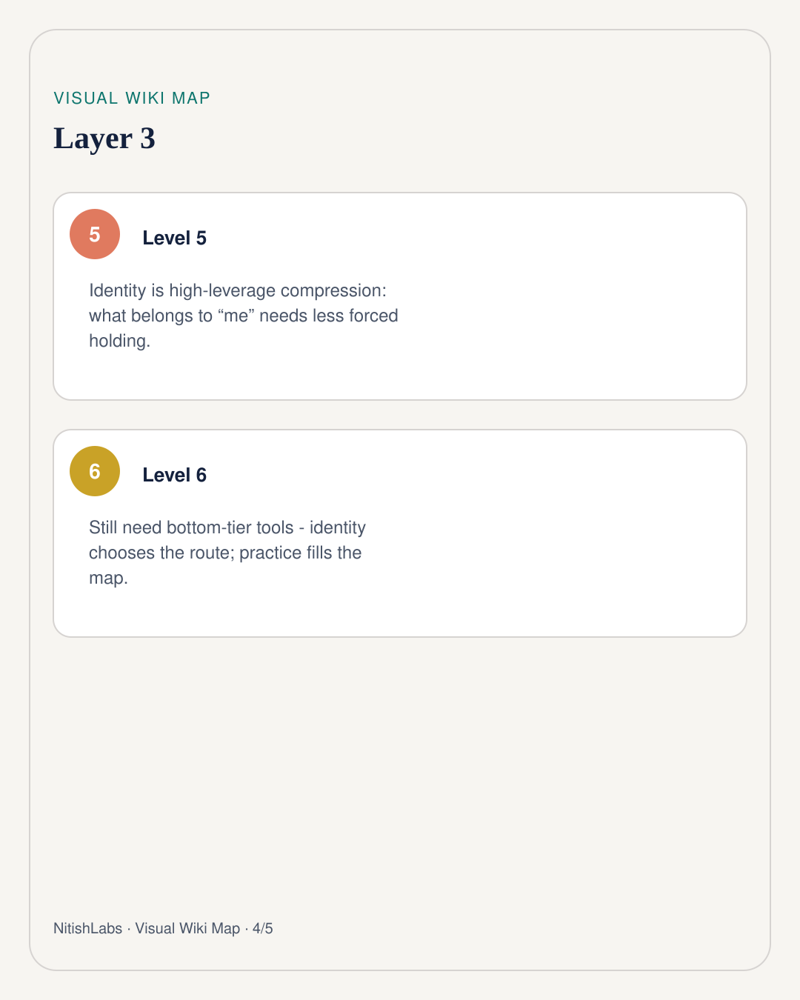
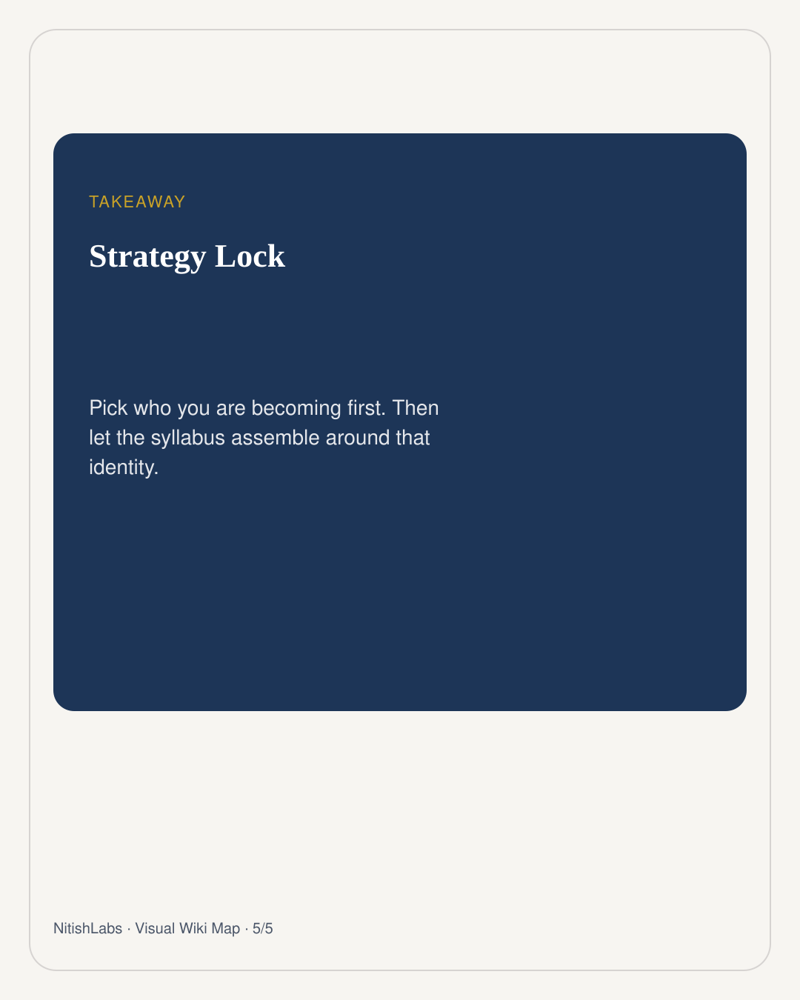

Become the Person First - Then Learn Into It
Most advice says learn skills until identity shifts. Flip it: pick who you are becoming, then let attention, emotion, and commitment organize the learning.
Visual Wiki Map
Compressed schema carousel · swipe





Nitish Chauhan watched a summary of his own thinking and felt a jolt: “That was me.” Recognition of authorship reopened a huge context at once. That is not magic. Self-relevance changes what the brain keeps.
Push the idea further and identity starts looking like a compression algorithm. What belongs to “who I am” needs less forced vocabulary. The brain encapsulates it.
Three mechanisms, not one slogan
- Identity - “I am the kind of person who studies systems” redirects attention.
- Emotion - pride and earned reward mark material for consolidation.
- Commitment - a deadline to explain forces organization.
They cooperate. Mixing them into one vague pep talk makes the model weaker.
Responsibility beats pretending
Do not declare false mastery. Temporarily adopt the responsibility of explaining a topic tonight.
Founders do a version of this on day one: the role slightly outruns competence, then competence catches up. Actors call it inhabiting a role. NitishLabs calls it identity borrowing with receipts - commitment that outruns ability but not willingness to do the work.
How to run the experiment
1. Pick a near identity (not a fantasy career cosplay) 2. Set a public or social explain-deadline 3. Force three non-obvious points before showtime 4. Review: what stuck because it felt like “me”? 5. Keep bottom-tier practice - identity chooses; drills stabilize
Humor is a useful litmus test here. When exploration is genuine, playfulness often shows up as a side effect. If a new identity path kills curiosity and play on contact, diagnose the path - do not romanticize grind for its own sake.
The quarterly question is not “what course next?” It is “who am I becoming, and what learning organizes itself around that?” Skills still matter. Identity decides which skills get to compound.